轻量级或工业级容器管理工具 Containerd¶
一、Containerd介绍¶
1.0 前言¶
-
早在2016年3月，Docker 1.11的Docker Engine里就包含了containerd，而现在则是把containerd从Docker Engine里彻底剥离出来，作为一个独立的开源项目独立发展，目标是提供一个更加开放、稳定的容器运行基础设施。和原先包含在Docker Engine里containerd相比，独立的containerd将具有更多的功能，可以涵盖整个容器运行时管理的所有需求。
-
containerd并不是直接面向最终用户的，而是主要用于集成到更上层的系统里，比如Swarm, Kubernetes, Mesos等容器编排系统。
- containerd以Daemon的形式运行在系统上，通过暴露底层的gRPC API，上层系统可以通过这些API管理机器上的容器。
- 每个containerd只负责一台机器，Pull镜像，对容器的操作（启动、停止等），网络，存储都是由containerd完成。具体运行容器由runC负责，实际上只要是符合OCI规范的容器都可以支持。
- 对于容器编排服务来说，运行时只需要使用containerd+runC，更加轻量，容易管理。
- 独立之后containerd的特性演进可以和Docker Engine分开，专注容器运行时管理，可以更稳定。
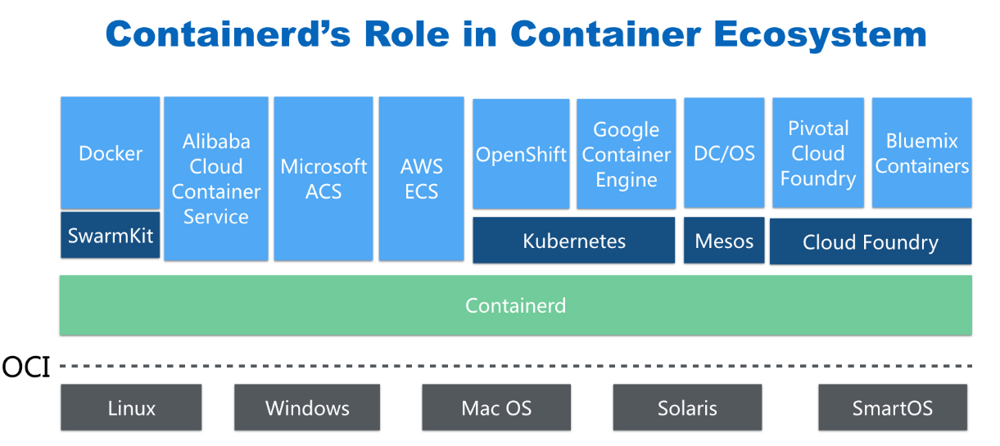
1.1 Containerd前世今生¶
2013年docker公司在推出docker产品后,由于其对全球技术产生了一定的影响力，Google公司明显感觉到自己公司内部所使用的Brog系统江湖地位受到的威胁，希望Docker公司能够与自己联合打造一款开源的容器运行时作为Docker核心依赖，但Docker公司拒绝了；接着Google公司联合RedHat、IBM等公司说服Docker公司把其容器核心技术libcontainer捐给中立社区(OCI,Open Container Intiative)，并更名为runC。 为了进一步遏制Docker在未来技术市场影响力，避免在容器市场上Docker一家独大，Google公司带领导RedHat、IBM等成立了CNCF(Cloud Native Computing Fundation)基金会，即云原生计算基金会。CNCF的目标很明确，既然在容器应用领域无法与Docker相抗衡，那就做Google更有经验的技术市场------大规模容器编排应用场景，Google公司把自己内部使用的Brog系统开源------Kubernetes，也就是我们今天所说的云原生技术生态。
2016年Docker公司推出了Docker Swarm，意在一统Docker生态，让Docker既可以实现容器应用管理，也可以实现大规模容器编排，经过近1年左右时间的市场验证后，发现在容器编排方面无法独立抗衡kubernetes,所以Docker公司于2017年正式宣布原生支持Kubernetes,至此，Docker在大规模容器编排应用市场败下阵来，但是Docker依然不甘心失败，把Docker核心依赖Containerd捐给了CNCF，依此说明Docker依旧是一个PaaS平台。
2020年CNCF基金会宣布Kubernetes 1.20版本将不再仅支持Docker容器管理工具，此事的起因主要也与Docker捐给CNCF基金会的Containerd有关，早期为了实现Kubernetes能够使用Docker实现容器管理，专门在Kubernetes组件中集成一个shim（垫片）技术，用来将Kubernetes容器运行时接口（CRI，Container Runntime Interface）调用翻译成Docker的API,这样就可以很好地使用Docker了，但是随着Kubernetes在全球技术市场的广泛应用，有更多的容器管理工具的出现，它们都想能够借助于Kubernetes被用户所使用，所以就提出标准化容器运行时接口，只要适配了这个接口就可以集成到Kubernetes生态当中，所以Kubernetes取消了对shim的维护，并且由于Containerd技术的成功，可以实现无缝对接Kubernetes，所以接下来Kubernetes容器运行时的主角是Containerd。
1.2 Containerd架构¶
1.2.1 架构图¶
Containerd设计的目的是为了嵌入到Kubernetes中使用，它是一个工业级的容器运行时，不提供给开发人员和终端用户直接使用，这样就避免了与Docker产生竞争，但事实上，Containerd已经实现大多数容器管理功能，例如：容器生命周期管理、容器镜像传输和管理、容器存储与网络管理等。
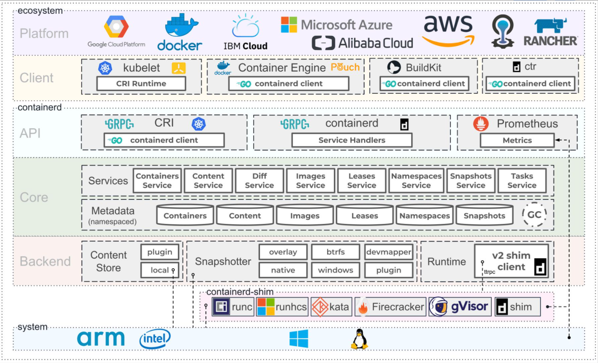
- Containerd 采用标准的 C/S 架构
- 服务端通过 GRPC 协议提供稳定的 API
-
客户端通过调用服务端的 API 进行高级的操作
-
为了实现解耦，Containerd 将不同的职责划分给不同的组件，每个组件就相当于一个子系统（subsystem）。连接不同子系统的组件被称为模块。
-
Containerd 两大子系统为：
-
Bundle : 在 Containerd 中，Bundle 包含了配置、元数据和根文件系统数据，你可以理解为容器的文件系统。而 Bundle 子系统允许用户从镜像中提取和打包 Bundles。
- Runtime : Runtime 子系统用来执行 Bundles，比如创建容器。
其中，每一个子系统的行为都由一个或多个模块协作完成（架构图中的 Core 部分）。每一种类型的模块都以插件的形式集成到 Containerd 中，而且插件之间是相互依赖的。
例如，上图中的每一个长虚线的方框都表示一种类型的插件，包括 Service Plugin、Metadata Plugin、GC Plugin、Runtime Plugin 等，其中 Service Plugin 又会依赖 Metadata Plugin、GC Plugin 和 Runtime Plugin。每一个小方框都表示一个细分的插件，例如 Metadata Plugin 依赖 Containers Plugin、Content Plugin 等。
1.2.2 常用插件¶
- Content Plugin : 提供对镜像中可寻址内容的访问，所有不可变的内容都被存储在这里。
- Snapshot Plugin : 用来管理容器镜像的文件系统快照。镜像中的每一个 layer 都会被解压成文件系统快照，类似于 Docker 中的
graphdriver。 - Metrics : 暴露各个组件的监控指标。
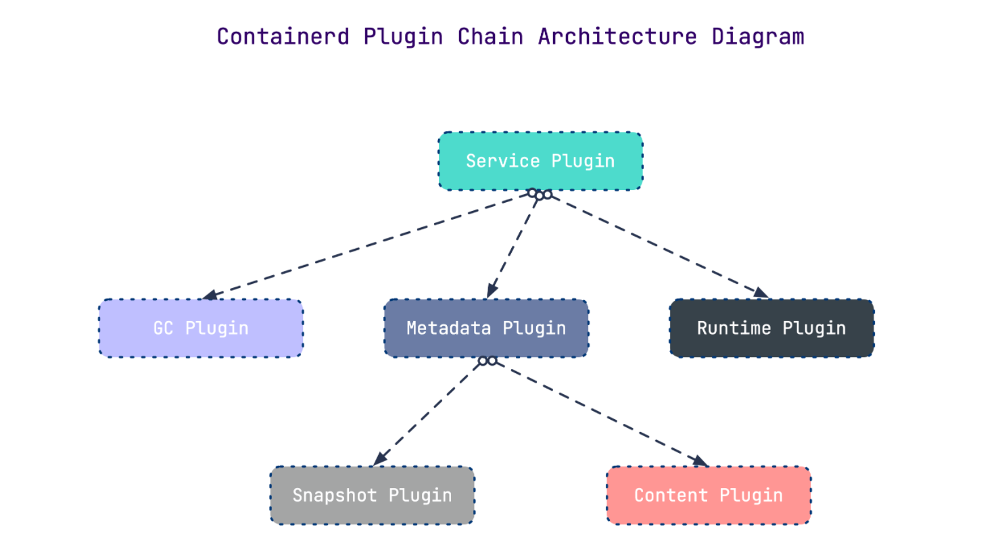
1.2.3 架构缩略图¶
Containerd 被分为三个大块：Storage、Metadata 和 Runtime
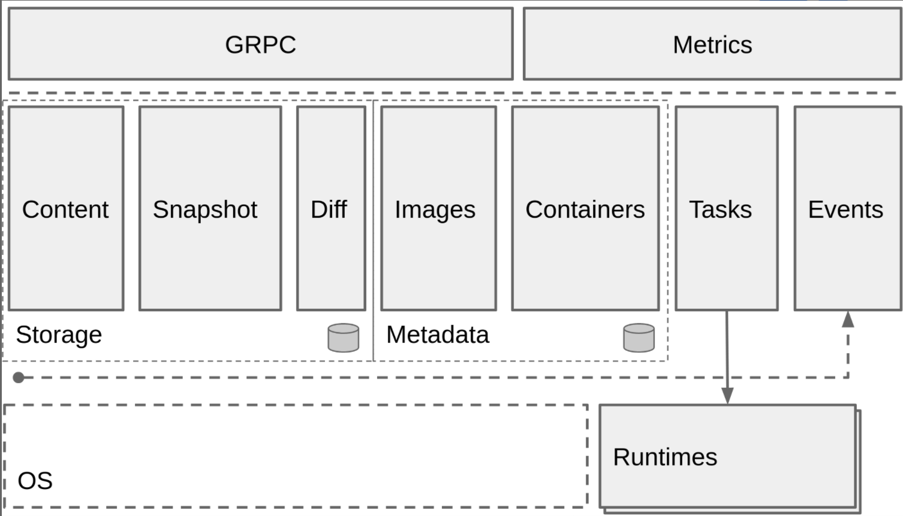
1.2.4 与其它容器运行时工具性能对比¶
这是使用 bucketbench 对 Docker、crio 和 Containerd 的性能测试结果，包括启动、停止和删除容器，以比较它们所耗的时间：
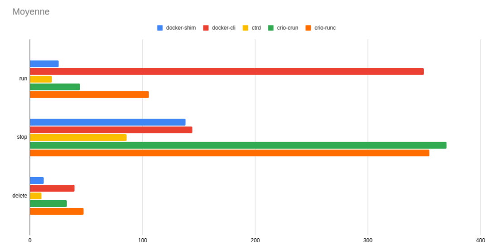
结论： Containerd 在各个方面都表现良好，总体性能优于 Docker 和 crio 。
二、Containerd安装¶
课程操作系统环境为centos7u6
2.1 YUM方式安装¶
2.1.1 获取YUM源¶
获取阿里云YUM源
# wget -O /etc/yum.repos.d/docker-ce.repo https://mirrors.aliyun.com/docker-ce/linux/centos/docker-ce.repo
查看YUM源中Containerd软件
# yum list | grep containerd
containerd.io.x86_64 1.4.12-3.1.el7 docker-ce-stable
2.1.2 使用yum命令安装¶
安装Containerd.io软件，即可安装Containerd
# yum -y install containerd.io
2.1.3 验证安装及启动服务¶
使用rpm -qa命令查看是否安装
# rpm -qa | grep containerd
containerd.io-1.4.12-3.1.el7.x86_64
设置containerd服务启动及开机自启动
# systemctl enable containerd
# systemctl start containerd
查看containerd服务启动状态
# systemctl status containerd
● containerd.service - containerd container runtime
Loaded: loaded (/usr/lib/systemd/system/containerd.service; enabled; vendor preset: disabled)
Active: active (running) since 五 2022-02-18 11:38:30 CST; 9s ago 此行第二列及第三列表示其正在运行状态
Docs: https://containerd.io
Process: 59437 ExecStartPre=/sbin/modprobe overlay (code=exited, status=0/SUCCESS)
Main PID: 59439 (containerd)
Tasks: 7
Memory: 19.5M
CGroup: /system.slice/containerd.service
└─59439 /usr/bin/containerd
......
2.1.4 验证可用性¶
安装Containerd时ctr命令亦可使用，ctr命令主要用于管理容器及容器镜像等。
使用ctr命令查看Containerd客户端及服务端相关信息。
# ctr version
Client:
Version: 1.4.12
Revision: 7b11cfaabd73bb80907dd23182b9347b4245eb5d
Go version: go1.16.10
Server:
Version: 1.4.12
Revision: 7b11cfaabd73bb80907dd23182b9347b4245eb5d
UUID: 3c4b142d-d91d-44a5-aae2-9673785d4b2c
2.2 二进制方式安装¶
Containerd有两种安装包：
- 第一种是
containerd-xxx,这种包用于单机测试没问题，不包含runC，需要提前安装。 - 第二种是
cri-containerd-cni-xxxx，包含runc和k8s里的所需要的相关文件。k8s集群里需要用到此包。虽然包含runC，但是依赖系统中的seccomp（安全计算模式，是一种限制容器调用系统资源的模式。）
2.2.1 获取安装包¶
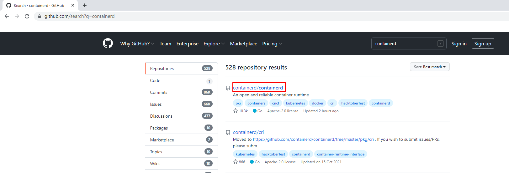

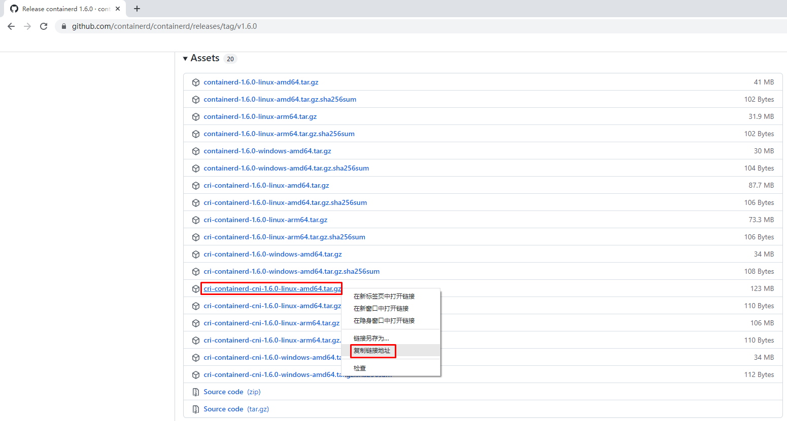
下载Containerd安装包
# wget https://github.com/containerd/containerd/releases/download/v1.6.0/cri-containerd-cni-1.6.0-linux-amd64.tar.gz
2.2.2 安装并测试可用性¶
2.2.2.1 安装containerd¶
查看已获取的安装包
# ls
cri-containerd-cni-1.6.0-linux-amd64.tar.gz
解压已下载的软件包
# tar xf cri-containerd-cni-1.6.0-linux-amd64.tar.gz
查看解压后目录
# ls
etc opt usr
查看etc目录，主要为containerd服务管理配置文件及cni虚拟网卡配置文件
# ls etc
cni crictl.yaml systemd
# ls etc/systemd/
system
# ls etc/systemd/system/
containerd.service
查看opt目录，主要为gce环境中使用containerd配置文件及cni插件
# ls opt
cni containerd
# ls opt/containerd/
cluster
# ls opt/containerd/cluster/
gce version
# ls opt/containerd/cluster/gce
cloud-init cni.template configure.sh env
查看usr目录，主要为containerd运行时文件，包含runc
# ls usr
local
# ls usr/local/
bin sbin
# ls usr/local/bin
containerd containerd-shim containerd-shim-runc-v1 containerd-shim-runc-v2 containerd-stress crictl critest ctd-decoder ctr
# ls usr/local/sbin
runc
2.2.2.2 查看containerd安装位置¶
查看containerd.service文件，了解containerd文件安装位置
# cat etc/systemd/system/containerd.service
# Copyright The containerd Authors.
#
# Licensed under the Apache License, Version 2.0 (the "License");
# you may not use this file except in compliance with the License.
# You may obtain a copy of the License at
#
# http://www.apache.org/licenses/LICENSE-2.0
#
# Unless required by applicable law or agreed to in writing, software
# distributed under the License is distributed on an "AS IS" BASIS,
# WITHOUT WARRANTIES OR CONDITIONS OF ANY KIND, either express or implied.
# See the License for the specific language governing permissions and
# limitations under the License.
[Unit]
Description=containerd container runtime
Documentation=https://containerd.io
After=network.target local-fs.target
[Service]
ExecStartPre=-/sbin/modprobe overlay
ExecStart=/usr/local/bin/containerd 查看此位置,把containerd二进制文件放置于此处即可完成安装。
Type=notify
Delegate=yes
KillMode=process
Restart=always
RestartSec=5
# Having non-zero Limit*s causes performance problems due to accounting overhead
# in the kernel. We recommend using cgroups to do container-local accounting.
LimitNPROC=infinity
LimitCORE=infinity
LimitNOFILE=infinity
# Comment TasksMax if your systemd version does not supports it.
# Only systemd 226 and above support this version.
TasksMax=infinity
OOMScoreAdjust=-999
[Install]
WantedBy=multi-user.target
2.2.2.3 复制containerd运行时文件至系统¶
查看宿主机/usr/local/bin目录，里面没有任何内容。
# ls /usr/local/bin/
查看解压后usr/local/bin目录，里面包含containerd运行时文件
# ls usr/
local
# ls usr/local/
bin sbin
# ls usr/local/bin/
containerd containerd-shim containerd-shim-runc-v1 containerd-shim-runc-v2 containerd-stress crictl critest ctd-decoder ctr
复制containerd文件至/usr/local/bin目录中，本次可仅复制containerd一个文件也可复制全部文件。
# cp usr/local/bin/containerd /usr/local/bin/
# ls /usr/local/bin/
containerd
2.2.2.4 添加containerd.service文件至系统¶
查看解压后的etc/system目录
# ls etc
cni crictl.yaml systemd
# ls etc/systemd/
system
# ls etc/systemd/system/
containerd.service
复制containerd服务管理配置文件至/usr/lib/systemd/system/目录中
# cp etc/systemd/system/containerd.service /usr/lib/systemd/system/containerd.service
查看复制后结果
# ls /usr/lib/systemd/system/containerd.service
/usr/lib/systemd/system/containerd.service
2.2.2.5 查看containerd使用帮助¶
# containerd --help
NAME:
containerd -
__ _ __
_________ ____ / /_____ _(_)___ ___ _________/ /
/ ___/ __ \/ __ \/ __/ __ `/ / __ \/ _ \/ ___/ __ /
/ /__/ /_/ / / / / /_/ /_/ / / / / / __/ / / /_/ /
\___/\____/_/ /_/\__/\__,_/_/_/ /_/\___/_/ \__,_/
high performance container runtime
USAGE:
containerd [global options] command [command options] [arguments...]
VERSION:
v1.6.0
DESCRIPTION:
containerd is a high performance container runtime whose daemon can be started
by using this command. If none of the *config*, *publish*, or *help* commands
are specified, the default action of the **containerd** command is to start the
containerd daemon in the foreground.
A default configuration is used if no TOML configuration is specified or located
at the default file location. The *containerd config* command can be used to
generate the default configuration for containerd. The output of that command
can be used and modified as necessary as a custom configuration.
COMMANDS:
config information on the containerd config
publish binary to publish events to containerd
oci-hook provides a base for OCI runtime hooks to allow arguments to be injected.
help, h Shows a list of commands or help for one command
GLOBAL OPTIONS:
--config value, -c value path to the configuration file (default: "/etc/containerd/config.toml")
--log-level value, -l value set the logging level [trace, debug, info, warn, error, fatal, panic]
--address value, -a value address for containerd's GRPC server
--root value containerd root directory
--state value containerd state directory
--help, -h show help
--version, -v print the version
2.2.2.6 生成containerd模块配置文件¶
2.2.2.6.1 生成默认模块配置文件¶
Containerd 的默认配置文件为 /etc/containerd/config.toml，可以使用containerd config default > /etc/containerd/config.toml命令创建一份模块配置文件
创建配置文件目录
# mkdir /etc/containerd
生成配置文件
# containerd config default > /etc/containerd/config.toml
查看配置文件
# cat /etc/containerd/config.toml
disabled_plugins = []
imports = []
oom_score = 0
plugin_dir = ""
required_plugins = []
root = "/var/lib/containerd"
state = "/run/containerd"
temp = ""
version = 2
[cgroup]
path = ""
[debug]
address = ""
format = ""
gid = 0
level = ""
uid = 0
[grpc]
address = "/run/containerd/containerd.sock"
gid = 0
max_recv_message_size = 16777216
max_send_message_size = 16777216
tcp_address = ""
tcp_tls_ca = ""
tcp_tls_cert = ""
tcp_tls_key = ""
uid = 0
[metrics]
address = ""
grpc_histogram = false
[plugins]
[plugins."io.containerd.gc.v1.scheduler"]
deletion_threshold = 0
mutation_threshold = 100
pause_threshold = 0.02
schedule_delay = "0s"
startup_delay = "100ms"
[plugins."io.containerd.grpc.v1.cri"]
device_ownership_from_security_context = false
disable_apparmor = false
disable_cgroup = false
disable_hugetlb_controller = true
disable_proc_mount = false
disable_tcp_service = true
enable_selinux = false
enable_tls_streaming = false
enable_unprivileged_icmp = false
enable_unprivileged_ports = false
ignore_image_defined_volumes = false
max_concurrent_downloads = 3
max_container_log_line_size = 16384
netns_mounts_under_state_dir = false
restrict_oom_score_adj = false
sandbox_image = "k8s.gcr.io/pause:3.6" 由于网络原因，此处被替换
selinux_category_range = 1024
stats_collect_period = 10
stream_idle_timeout = "4h0m0s"
stream_server_address = "127.0.0.1"
stream_server_port = "0"
systemd_cgroup = false
tolerate_missing_hugetlb_controller = true
unset_seccomp_profile = ""
[plugins."io.containerd.grpc.v1.cri".cni]
bin_dir = "/opt/cni/bin"
conf_dir = "/etc/cni/net.d"
conf_template = ""
ip_pref = ""
max_conf_num = 1
[plugins."io.containerd.grpc.v1.cri".containerd]
default_runtime_name = "runc"
disable_snapshot_annotations = true
discard_unpacked_layers = false
ignore_rdt_not_enabled_errors = false
no_pivot = false
snapshotter = "overlayfs"
[plugins."io.containerd.grpc.v1.cri".containerd.default_runtime]
base_runtime_spec = ""
cni_conf_dir = ""
cni_max_conf_num = 0
container_annotations = []
pod_annotations = []
privileged_without_host_devices = false
runtime_engine = ""
runtime_path = ""
runtime_root = ""
runtime_type = ""
[plugins."io.containerd.grpc.v1.cri".containerd.default_runtime.options]
[plugins."io.containerd.grpc.v1.cri".containerd.runtimes]
[plugins."io.containerd.grpc.v1.cri".containerd.runtimes.runc]
base_runtime_spec = ""
cni_conf_dir = ""
cni_max_conf_num = 0
container_annotations = []
pod_annotations = []
privileged_without_host_devices = false
runtime_engine = ""
runtime_path = ""
runtime_root = ""
runtime_type = "io.containerd.runc.v2"
[plugins."io.containerd.grpc.v1.cri".containerd.runtimes.runc.options]
BinaryName = ""
CriuImagePath = ""
CriuPath = ""
CriuWorkPath = ""
IoGid = 0
IoUid = 0
NoNewKeyring = false
NoPivotRoot = false
Root = ""
ShimCgroup = ""
SystemdCgroup = false
[plugins."io.containerd.grpc.v1.cri".containerd.untrusted_workload_runtime]
base_runtime_spec = ""
cni_conf_dir = ""
cni_max_conf_num = 0
container_annotations = []
pod_annotations = []
privileged_without_host_devices = false
runtime_engine = ""
runtime_path = ""
runtime_root = ""
runtime_type = ""
[plugins."io.containerd.grpc.v1.cri".containerd.untrusted_workload_runtime.options]
[plugins."io.containerd.grpc.v1.cri".image_decryption]
key_model = "node"
[plugins."io.containerd.grpc.v1.cri".registry]
config_path = ""
[plugins."io.containerd.grpc.v1.cri".registry.auths]
[plugins."io.containerd.grpc.v1.cri".registry.configs]
[plugins."io.containerd.grpc.v1.cri".registry.headers]
[plugins."io.containerd.grpc.v1.cri".registry.mirrors]
[plugins."io.containerd.grpc.v1.cri".x509_key_pair_streaming]
tls_cert_file = ""
tls_key_file = ""
[plugins."io.containerd.internal.v1.opt"]
path = "/opt/containerd"
[plugins."io.containerd.internal.v1.restart"]
interval = "10s"
[plugins."io.containerd.internal.v1.tracing"]
sampling_ratio = 1.0
service_name = "containerd"
[plugins."io.containerd.metadata.v1.bolt"]
content_sharing_policy = "shared"
[plugins."io.containerd.monitor.v1.cgroups"]
no_prometheus = false
[plugins."io.containerd.runtime.v1.linux"]
no_shim = false
runtime = "runc"
runtime_root = ""
shim = "containerd-shim"
shim_debug = false
[plugins."io.containerd.runtime.v2.task"]
platforms = ["linux/amd64"]
sched_core = false
[plugins."io.containerd.service.v1.diff-service"]
default = ["walking"]
[plugins."io.containerd.service.v1.tasks-service"]
rdt_config_file = ""
[plugins."io.containerd.snapshotter.v1.aufs"]
root_path = ""
[plugins."io.containerd.snapshotter.v1.btrfs"]
root_path = ""
[plugins."io.containerd.snapshotter.v1.devmapper"]
async_remove = false
base_image_size = ""
discard_blocks = false
fs_options = ""
fs_type = ""
pool_name = ""
root_path = ""
[plugins."io.containerd.snapshotter.v1.native"]
root_path = ""
[plugins."io.containerd.snapshotter.v1.overlayfs"]
root_path = ""
upperdir_label = false
[plugins."io.containerd.snapshotter.v1.zfs"]
root_path = ""
[plugins."io.containerd.tracing.processor.v1.otlp"]
endpoint = ""
insecure = false
protocol = ""
[proxy_plugins]
[stream_processors]
[stream_processors."io.containerd.ocicrypt.decoder.v1.tar"]
accepts = ["application/vnd.oci.image.layer.v1.tar+encrypted"]
args = ["--decryption-keys-path", "/etc/containerd/ocicrypt/keys"]
env = ["OCICRYPT_KEYPROVIDER_CONFIG=/etc/containerd/ocicrypt/ocicrypt_keyprovider.conf"]
path = "ctd-decoder"
returns = "application/vnd.oci.image.layer.v1.tar"
[stream_processors."io.containerd.ocicrypt.decoder.v1.tar.gzip"]
accepts = ["application/vnd.oci.image.layer.v1.tar+gzip+encrypted"]
args = ["--decryption-keys-path", "/etc/containerd/ocicrypt/keys"]
env = ["OCICRYPT_KEYPROVIDER_CONFIG=/etc/containerd/ocicrypt/ocicrypt_keyprovider.conf"]
path = "ctd-decoder"
returns = "application/vnd.oci.image.layer.v1.tar+gzip"
[timeouts]
"io.containerd.timeout.bolt.open" = "0s"
"io.containerd.timeout.shim.cleanup" = "5s"
"io.containerd.timeout.shim.load" = "5s"
"io.containerd.timeout.shim.shutdown" = "3s"
"io.containerd.timeout.task.state" = "2s"
[ttrpc]
address = ""
gid = 0
uid = 0
2.2.2.6.2 替换默认配置文件¶
但上述配置文件后期改动的地方较多，这里直接换成可单机使用也可k8s环境使用的配置文件并配置好镜像加速器。
# vim /etc/containerd/config.toml
# cat /etc/containerd/config.toml
root = "/var/lib/containerd"
state = "/run/containerd"
oom_score = -999
[grpc]
address = "/run/containerd/containerd.sock"
uid = 0
gid = 0
max_recv_message_size = 16777216
max_send_message_size = 16777216
[debug]
address = ""
uid = 0
gid = 0
level = ""
[metrics]
address = ""
grpc_histogram = false
[cgroup]
path = ""
[plugins]
[plugins.cgroups]
no_prometheus = false
[plugins.cri]
stream_server_address = "127.0.0.1"
stream_server_port = "0"
enable_selinux = false
sandbox_image = "easzlab/pause-amd64:3.2"
stats_collect_period = 10
systemd_cgroup = false
enable_tls_streaming = false
max_container_log_line_size = 16384
[plugins.cri.containerd]
snapshotter = "overlayfs"
no_pivot = false
[plugins.cri.containerd.default_runtime]
runtime_type = "io.containerd.runtime.v1.linux"
runtime_engine = ""
runtime_root = ""
[plugins.cri.containerd.untrusted_workload_runtime]
runtime_type = ""
runtime_engine = ""
runtime_root = ""
[plugins.cri.cni]
bin_dir = "/opt/kube/bin"
conf_dir = "/etc/cni/net.d"
conf_template = "/etc/cni/net.d/10-default.conf"
[plugins.cri.registry]
[plugins.cri.registry.mirrors]
[plugins.cri.registry.mirrors."docker.io"]
endpoint = [
"https://docker.mirrors.ustc.edu.cn",
"http://hub-mirror.c.163.com"
]
[plugins.cri.registry.mirrors."gcr.io"]
endpoint = [
"https://gcr.mirrors.ustc.edu.cn"
]
[plugins.cri.registry.mirrors."k8s.gcr.io"]
endpoint = [
"https://gcr.mirrors.ustc.edu.cn/google-containers/"
]
[plugins.cri.registry.mirrors."quay.io"]
endpoint = [
"https://quay.mirrors.ustc.edu.cn"
]
[plugins.cri.registry.mirrors."harbor.kubemsb.com"] 此处添加了本地容器镜像仓库 Harbor,做为本地容器镜像仓库。
endpoint = [
"http://harbor.kubemsb.com"
]
[plugins.cri.x509_key_pair_streaming]
tls_cert_file = ""
tls_key_file = ""
[plugins.diff-service]
default = ["walking"]
[plugins.linux]
shim = "containerd-shim"
runtime = "runc"
runtime_root = ""
no_shim = false
shim_debug = false
[plugins.opt]
path = "/opt/containerd"
[plugins.restart]
interval = "10s"
[plugins.scheduler]
pause_threshold = 0.02
deletion_threshold = 0
mutation_threshold = 100
schedule_delay = "0s"
startup_delay = "100ms"
2.2.2.7 启动containerd服务并设置开机自启动¶
# systemctl enable containerd
Created symlink from /etc/systemd/system/multi-user.target.wants/containerd.service to /usr/lib/systemd/system/containerd.service.
# systemctl start containerd
# systemctl status containerd
● containerd.service - containerd container runtime
Loaded: loaded (/usr/lib/systemd/system/containerd.service; enabled; vendor preset: disabled)
Active: active (running) since 五 2022-02-18 13:02:37 CST; 7s ago
Docs: https://containerd.io
Process: 60383 ExecStartPre=/sbin/modprobe overlay (code=exited, status=0/SUCCESS)
Main PID: 60384 (containerd)
Tasks: 8
Memory: 20.0M
CGroup: /system.slice/containerd.service
└─60384 /usr/local/bin/containerd
......
2.2.2.8 复制ctr命令至系统¶
# ls usr/local/bin/
containerd containerd-shim containerd-shim-runc-v1 containerd-shim-runc-v2 containerd-stress crictl critest ctd-decoder ctr
# cp usr/local/bin/ctr /usr/bin/
2.2.2.9 查看已安装containerd服务版本¶
# ctr version
Client:
Version: v1.6.0
Revision: 39259a8f35919a0d02c9ecc2871ddd6ccf6a7c6e
Go version: go1.17.2
Server:
Version: v1.6.0
Revision: 39259a8f35919a0d02c9ecc2871ddd6ccf6a7c6e
UUID: c1972cbe-884a-41b0-867f-f8a58c168e6d
2.2.2.10 安装runC¶
由于二进制包中提供的runC默认需要系统中安装seccomp支持，需要单独安装，且不同版本runC对seccomp版本要求一致，所以建议单独下载runC 二进制包进行安装，里面包含了seccomp模块支持。
2.2.2.10.1 获取runC¶
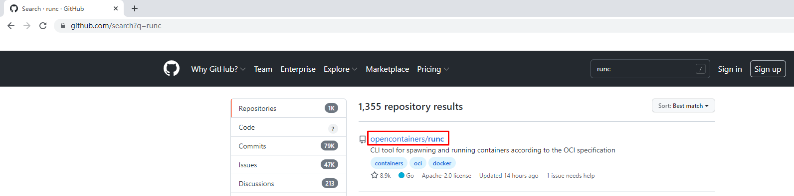
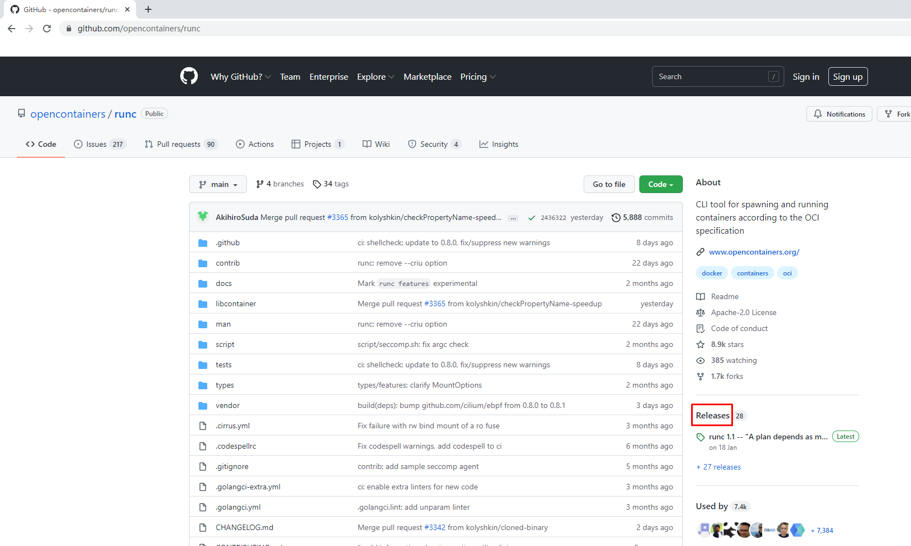
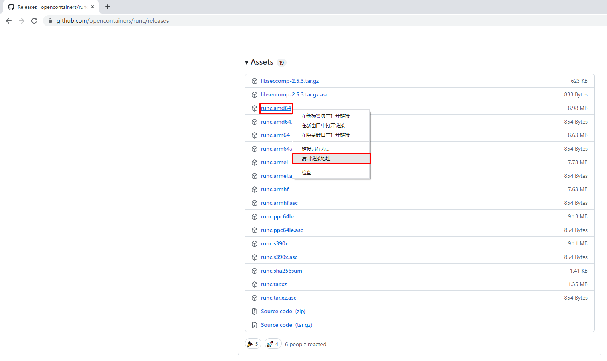
使用wget下载
# wget https://github.com/opencontainers/runc/releases/download/v1.1.0/runc.amd64
2.2.2.10.2 安装runC并验证安装结果¶
查看已下载文件
# ls
runc.amd64
安装runC
# mv runc.amd64 /usr/sbin/runc
为runC添加可执行权限
# chmod +x /usr/sbin/runc
使用runc命令验证是否安装成功
# runc -v
runc version 1.1.0
commit: v1.1.0-0-g067aaf85
spec: 1.0.2-dev
go: go1.17.6
libseccomp: 2.5.3
三、Containerd容器镜像管理¶
3.1 Containerd容器镜像管理命令¶
- docker使用docker images命令管理镜像
- 单机containerd使用ctr images命令管理镜像,containerd本身的CLI
- k8s中containerd使用crictl images命令管理镜像,Kubernetes社区的专用CLI工具
获取命令帮助
# ctr --help
NAME:
ctr -
__
_____/ /______
/ ___/ __/ ___/
/ /__/ /_/ /
\___/\__/_/
containerd CLI
USAGE:
ctr [global options] command [command options] [arguments...]
VERSION:
v1.6.0
DESCRIPTION:
ctr is an unsupported debug and administrative client for interacting
with the containerd daemon. Because it is unsupported, the commands,
options, and operations are not guaranteed to be backward compatible or
stable from release to release of the containerd project.
COMMANDS:
plugins, plugin provides information about containerd plugins
version print the client and server versions
containers, c, container manage containers
content manage content
events, event display containerd events
images, image, i manage images
leases manage leases
namespaces, namespace, ns manage namespaces
pprof provide golang pprof outputs for containerd
run run a container
snapshots, snapshot manage snapshots
tasks, t, task manage tasks
install install a new package
oci OCI tools
shim interact with a shim directly
help, h Shows a list of commands or help for one command
GLOBAL OPTIONS:
--debug enable debug output in logs
--address value, -a value address for containerd's GRPC server (default: "/run/containerd/containerd.sock") [$CONTAINERD_ADDRESS]
--timeout value total timeout for ctr commands (default: 0s)
--connect-timeout value timeout for connecting to containerd (default: 0s)
--namespace value, -n value namespace to use with commands (default: "default") [$CONTAINERD_NAMESPACE]
--help, -h show help
--version, -v print the version
获取命令帮助
# ctr images
NAME:
ctr images - manage images
USAGE:
ctr images command [command options] [arguments...]
COMMANDS:
check check existing images to ensure all content is available locally
export export images
import import images
list, ls list images known to containerd
mount mount an image to a target path
unmount unmount the image from the target
pull pull an image from a remote
push push an image to a remote
delete, del, remove, rm remove one or more images by reference
tag tag an image
label set and clear labels for an image
convert convert an image
OPTIONS:
--help, -h show help
3.2 查看镜像¶
# ctr images ls
REF TYPE DIGEST SIZE PLATFORMS LABELS
3.3 下载镜像¶
containerd支持oci标准的镜像，所以可以直接使用docker官方或dockerfile构建的镜像
# ctr images pull --all-platforms docker.io/library/nginx:alpine
docker.io/library/nginx:alpine: resolved |++++++++++++++++++++++++++++++++++++++|
docker.io/library/nginx:alpine: resolved |++++++++++++++++++++++++++++++++++++++|
index-sha256:da9c94bec1da829ebd52431a84502ec471c8e548ffb2cedbf36260fd9bd1d4d3: done |++++++++++++++++++++++++++++++++++++++|
manifest-sha256:050385609d832fae11b007fbbfba77d0bba12bf72bc0dca0ac03e09b1998580f: done |++++++++++++++++++++++++++++++++++++++|
layer-sha256:f2303c6c88653b9a6739d50f611c170b9d97d161c6432409c680f6b46a5f112f: done |++++++++++++++++++++++++++++++++++++++|
config-sha256:bef258acf10dc257d641c47c3a600c92f87be4b4ce4a5e4752b3eade7533dcd9: done |++++++++++++++++++++++++++++++++++++++|
layer-sha256:59bf1c3509f33515622619af21ed55bbe26d24913cedbca106468a5fb37a50c3: done |++++++++++++++++++++++++++++++++++++++|
layer-sha256:8d6ba530f6489d12676d7f61628427d067243ba4a3a512c3e28813b977cb3b0e: done |++++++++++++++++++++++++++++++++++++++|
layer-sha256:5288d7ad7a7f84bdd19c1e8f0abb8684b5338f3da86fe9ae1d7f0e9bc2de6595: done |++++++++++++++++++++++++++++++++++++++|
layer-sha256:39e51c61c033442d00c40a30b2a9ed01f40205875fbd8664c50b4dc3e99ad5cf: done |++++++++++++++++++++++++++++++++++++++|
layer-sha256:ee6f71c6f4a82b2afd01f92bdf6be0079364d03020e8a2c569062e1c06d3822b: done |++++++++++++++++++++++++++++++++++++++|
elapsed: 11.0s total: 8.7 Mi (809.5 KiB/s)
unpacking linux/amd64 sha256:da9c94bec1da829ebd52431a84502ec471c8e548ffb2cedbf36260fd9bd1d4d3...
done: 1.860946163s
说明：
这里ctr命令pull镜像时，不能直接把镜像名字写成`nginx:alpine`
查看已下载容器镜像
# ctr images ls
REF TYPE DIGEST SIZE PLATFORMS LABELS
docker.io/library/nginx:alpine application/vnd.docker.distribution.manifest.list.v2+json sha256:da9c94bec1da829ebd52431a84502ec471c8e548ffb2cedbf36260fd9bd1d4d3 9.7 MiB linux/386,linux/amd64,linux/arm/v6,linux/arm/v7,linux/arm64/v8,linux/ppc64le,linux/s390x -
| REF | TYPE | DIGEST |
|---|---|---|
| docker.io/library/nginx:alpine | application/vnd.docker.distribution.manifest.list.v2+json | sha256:da9c94bec1da829ebd52431a84502ec471c8e548ffb2cedbf36260fd9bd1d4d3 |
| SIZE | PLATFORMS | LABELS |
|---|---|---|
| 9.7 MiB | linux/386,linux/amd64,linux/arm/v6,linux/arm/v7,linux/arm64/v8,linux/ppc64le,linux/s390x | - |
指定平台下载容器镜像
# ctr images pull --platform linux/amd64 docker.io/library/nginx:alpine
3.4 镜像挂载¶
方便查看镜像中包含的内容。
把已下载的容器镜像挂载至当前文件系统
# ctr images mount docker.io/library/nginx:alpine /mnt
sha256:af2fcce448e2e4451a5f4796a9bf9cb5c9b5f88e0d6d10029cada42fb9d268ac
/mnt
[root@localhost ~]# ls /mnt
bin dev docker-entrypoint.d docker-entrypoint.sh etc home lib media mnt opt proc root run sbin srv sys tmp usr var
卸载
# umount /mnt
3.5 镜像导出¶
把容器镜像导出
# ctr i export --all-platforms nginx.img docker.io/library/nginx:alpine
说明
--all-platforms,导出所有平台镜像，本版本为1.6版本，1.4版本不需要添加此选项。
查看已导出容器镜像
# ls
nginx.img
# ls -lh
总用量 196M
-rw-r--r-- 1 root root 73M 2月 18 14:48 nginx.img
3.6 镜像删除¶
删除指定容器镜像
# ctr image rm docker.io/library/nginx:alpine
docker.io/library/nginx:alpine
再次查看容器镜像
[root@192 ~]# ctr images ls
REF TYPE DIGEST SIZE PLATFORMS LABELS
3.7 镜像导入¶
导入容器镜像
# ctr images import nginx.img
unpacking docker.io/library/nginx:alpine (sha256:da9c94bec1da829ebd52431a84502ec471c8e548ffb2cedbf36260fd9bd1d4d3)...done
3.8 修改镜像tag¶
# ctr images tag docker.io/library/nginx:alpine nginx:alpine
nginx:alpine
说明：
把docker.io/library/nginx:alpine 修改为 nginx:alpine
查看修改后的容器镜像
# ctr images ls
REF TYPE DIGEST SIZE PLATFORMS LABELS
docker.io/library/nginx:alpine application/vnd.docker.distribution.manifest.list.v2+json sha256:da9c94bec1da829ebd52431a84502ec471c8e548ffb2cedbf36260fd9bd1d4d3 9.7 MiB linux/386,linux/amd64,linux/arm/v6,linux/arm/v7,linux/arm64/v8,linux/ppc64le,linux/s390x -
nginx:alpine application/vnd.docker.distribution.manifest.list.v2+json sha256:da9c94bec1da829ebd52431a84502ec471c8e548ffb2cedbf36260fd9bd1d4d3 9.7 MiB linux/386,linux/amd64,linux/arm/v6,linux/arm/v7,linux/arm64/v8,linux/ppc64le,linux/s390x -
修改后对容器镜像做检查比对
# ctr images check
REF TYPE DIGEST STATUS SIZE UNPACKED
docker.io/library/nginx:alpine application/vnd.docker.distribution.manifest.list.v2+json sha256:da9c94bec1da829ebd52431a84502ec471c8e548ffb2cedbf36260fd9bd1d4d3 complete (7/7) 9.7 MiB/9.7 MiB true
nginx:alpine application/vnd.docker.distribution.manifest.list.v2+json sha256:da9c94bec1da829ebd52431a84502ec471c8e548ffb2cedbf36260fd9bd1d4d3 complete (7/7) 9.7 MiB/9.7 MiB true
四、Containerd容器管理¶
4.1 获取命令帮助¶
4.1.1 获取ctr命令帮助¶
[root@localhost ~]# ctr --help
NAME:
ctr -
__
_____/ /______
/ ___/ __/ ___/
/ /__/ /_/ /
\___/\__/_/
containerd CLI
USAGE:
ctr [global options] command [command options] [arguments...]
VERSION:
v1.6.0
DESCRIPTION:
ctr is an unsupported debug and administrative client for interacting
with the containerd daemon. Because it is unsupported, the commands,
options, and operations are not guaranteed to be backward compatible or
stable from release to release of the containerd project.
COMMANDS:
plugins, plugin provides information about containerd plugins
version print the client and server versions
containers, c, container manage containers
content manage content
events, event display containerd events
images, image, i manage images
leases manage leases
namespaces, namespace, ns manage namespaces
pprof provide golang pprof outputs for containerd
run run a container
snapshots, snapshot manage snapshots
tasks, t, task manage tasks
install install a new package
oci OCI tools
shim interact with a shim directly
help, h Shows a list of commands or help for one command
GLOBAL OPTIONS:
--debug enable debug output in logs
--address value, -a value address for containerd's GRPC server (default: "/run/containerd/containerd.sock") [$CONTAINERD_ADDRESS]
--timeout value total timeout for ctr commands (default: 0s)
--connect-timeout value timeout for connecting to containerd (default: 0s)
--namespace value, -n value namespace to use with commands (default: "default") [$CONTAINERD_NAMESPACE]
--help, -h show help
--version, -v print the version
4.1.2 获取创建静态容器命令帮助¶
# ctr container --help
NAME:
ctr containers - manage containers
USAGE:
ctr containers command [command options] [arguments...]
COMMANDS:
create create container
delete, del, remove, rm delete one or more existing containers
info get info about a container
list, ls list containers
label set and clear labels for a container
checkpoint checkpoint a container
restore restore a container from checkpoint
OPTIONS:
--help, -h show help
说明：
使用`ctr container create `命令创建容器后，容器并没有处于运行状态，其只是一个静态的容器。这个 container 对象只是包含了运行一个容器所需的资源及配置的数据结构，例如： namespaces、rootfs 和容器的配置都已经初始化成功了，只是用户进程(本案例为nginx)还没有启动。需要使用`ctr tasks`命令才能获取一个动态容器。
4.1.3 获取动态容器命令帮助¶
# ctr run --help
NAME:
ctr run - run a container
USAGE:
ctr run [command options] [flags] Image|RootFS ID [COMMAND] [ARG...]
OPTIONS:
--rm remove the container after running
--null-io send all IO to /dev/null
--log-uri value log uri
--detach, -d detach from the task after it has started execution
--fifo-dir value directory used for storing IO FIFOs
--cgroup value cgroup path (To disable use of cgroup, set to "" explicitly)
--platform value run image for specific platform
--cni enable cni networking for the container
--runc-binary value specify runc-compatible binary
--runc-root value specify runc-compatible root
--runc-systemd-cgroup start runc with systemd cgroup manager
--uidmap container-uid:host-uid:length run inside a user namespace with the specified UID mapping range; specified with the format container-uid:host-uid:length
--gidmap container-gid:host-gid:length run inside a user namespace with the specified GID mapping range; specified with the format container-gid:host-gid:length
--remap-labels provide the user namespace ID remapping to the snapshotter via label options; requires snapshotter support
--cpus value set the CFS cpu quota (default: 0)
--cpu-shares value set the cpu shares (default: 1024)
--snapshotter value snapshotter name. Empty value stands for the default value. [$CONTAINERD_SNAPSHOTTER]
--snapshotter-label value labels added to the new snapshot for this container.
--config value, -c value path to the runtime-specific spec config file
--cwd value specify the working directory of the process
--env value specify additional container environment variables (e.g. FOO=bar)
--env-file value specify additional container environment variables in a file(e.g. FOO=bar, one per line)
--label value specify additional labels (e.g. foo=bar)
--mount value specify additional container mount (e.g. type=bind,src=/tmp,dst=/host,options=rbind:ro)
--net-host enable host networking for the container
--privileged run privileged container
--read-only set the containers filesystem as readonly
--runtime value runtime name (default: "io.containerd.runc.v2")
--runtime-config-path value optional runtime config path
--tty, -t allocate a TTY for the container
--with-ns value specify existing Linux namespaces to join at container runtime (format '<nstype>:<path>')
--pid-file value file path to write the task's pid
--gpus value add gpus to the container
--allow-new-privs turn off OCI spec's NoNewPrivileges feature flag
--memory-limit value memory limit (in bytes) for the container (default: 0)
--device value file path to a device to add to the container; or a path to a directory tree of devices to add to the container
--cap-add value add Linux capabilities (Set capabilities with 'CAP_' prefix)
--cap-drop value drop Linux capabilities (Set capabilities with 'CAP_' prefix)
--seccomp enable the default seccomp profile
--seccomp-profile value file path to custom seccomp profile. seccomp must be set to true, before using seccomp-profile
--apparmor-default-profile value enable AppArmor with the default profile with the specified name, e.g. "cri-containerd.apparmor.d"
--apparmor-profile value enable AppArmor with an existing custom profile
--rdt-class value name of the RDT class to associate the container with. Specifies a Class of Service (CLOS) for cache and memory bandwidth management.
--rootfs use custom rootfs that is not managed by containerd snapshotter
--no-pivot disable use of pivot-root (linux only)
--cpu-quota value Limit CPU CFS quota (default: -1)
--cpu-period value Limit CPU CFS period (default: 0)
--rootfs-propagation value set the propagation of the container rootfs
说明：
使用`ctr run`命令可以创建一个静态容器并使其运行。一步到位运行容器。
4.2 查看容器¶
container表示静态容器，可用c缩写代表container
# ctr container ls
CONTAINER IMAGE RUNTIME
或
# ctr c ls
CONTAINER IMAGE RUNTIME
4.3 查看任务¶
task表示容器里跑的进程, 可用t缩写代表task
# ctr task ls
TASK PID STATUS
或
# ctr t ls
TASK PID STATUS
4.4 创建静态容器¶
# ctr c create docker.io/library/nginx:alpine nginx1
# ctr container ls
CONTAINER IMAGE RUNTIME
nginx1 docker.io/library/nginx:alpine io.containerd.runc.v2
查看容器详细信息
# ctr container info nginx1
4.5 静态容器启动为动态容器¶
复制containerd连接runC垫片工具至系统
# ls usr/local/bin/
containerd containerd-shim containerd-shim-runc-v1 containerd-shim-runc-v2 containerd-stress crictl critest ctd-decoder ctr
[root@localhost ~]# cp usr/local/bin/containerd-shim-runc-v2 /usr/bin/
启动task，即表时在容器中运行了进程，即为动态容器。
# ctr task start -d nginx1
/docker-entrypoint.sh: /docker-entrypoint.d/ is not empty, will attempt to perform configuration
/docker-entrypoint.sh: Looking for shell scripts in /docker-entrypoint.d/
说明：
-d表示daemon或者后台的意思，否则会卡住终端
查看容器所在宿主机进程，是以宿主机进程的方式存在的。
# ctr task ls
TASK PID STATUS
nginx1 3395 RUNNING
查看容器的进程(都是物理机的进程)
# ctr task ps nginx1
PID INFO
3395 -
3434 -
物理机查看到相应的进程
# ps -ef | grep 3395
root 3395 3375 0 19:16 ? 00:00:00 nginx: master process nginx -g daemon off;
101 3434 3395 0 19:16 ? 00:00:00 nginx: worker process
4.6 进入容器操作¶
# ctr task exec --exec-id 1 nginx1 /bin/sh
ifconfig 查看网卡信息
lo Link encap:Local Loopback
inet addr:127.0.0.1 Mask:255.0.0.0
inet6 addr: ::1/128 Scope:Host
UP LOOPBACK RUNNING MTU:65536 Metric:1
RX packets:0 errors:0 dropped:0 overruns:0 frame:0
TX packets:0 errors:0 dropped:0 overruns:0 carrier:0
collisions:0 txqueuelen:1000
RX bytes:0 (0.0 B) TX bytes:0 (0.0 B)
curl 127.0.0.1 访问本地提供的web服务
% Total % Received % Xferd Average Speed Time Time Time Current
Dload Upload Total Spent Left Speed
0 0 0 0 0 0 0 0 --:--:-- --:--:-- --:--:-- 0<!DOCTYPE html>
<html>
<head>
<title>Welcome to nginx!</title>
<style>
html { color-scheme: light dark; }
body { width: 35em; margin: 0 auto;
font-family: Tahoma, Verdana, Arial, sans-serif; }
</style>
</head>
<body>
<h1>Welcome to nginx!</h1>
<p>If you see this page, the nginx web server is successfully installed and
working. Further configuration is required.</p>
<p>For online documentation and support please refer to
<a href="http://nginx.org/">nginx.org</a>.<br/>
Commercial support is available at
<a href="http://nginx.com/">nginx.com</a>.</p>
<p><em>Thank you for using nginx.</em></p>
</body>
</html>
100 615 100 615 0 0 429k 0 --:--:-- --:--:-- --:--:-- 600k
说明：
为exec进程设定一个id，可以随意输入，只要保证唯一即可，也可使用$RANDOM变量。
4.7 直接运行一个动态容器¶
# ctr run -d --net-host docker.io/library/nginx:alpine nginx2
/docker-entrypoint.sh: /docker-entrypoint.d/ is not empty, will attempt to perform configuration
/docker-entrypoint.sh: Looking for shell scripts in /docker-entrypoint.d/
说明：
* -d 代表dameon，后台运行
* --net-host 代表容器的IP就是宿主机的IP(相当于docker里的host类型网络)
查看已运行容器
# ctr container ls
CONTAINER IMAGE RUNTIME
nginx2 docker.io/library/nginx:alpine io.containerd.runc.v2
查看已运行容器中运行的进程,既tasks
# ctr tasks ls
TASK PID STATUS
nginx2 4061 RUNNING
进入容器
# ctr task exec --exec-id 1 -t nginx2 /bin/sh
/ # ifconfig
ens33 Link encap:Ethernet HWaddr 00:0C:29:B1:B6:1D
inet addr:192.168.10.164 Bcast:192.168.10.255 Mask:255.255.255.0
inet6 addr: fe80::2b33:40ed:9311:8812/64 Scope:Link
inet6 addr: fe80::adf4:a8bc:a1c:a9f7/64 Scope:Link
UP BROADCAST RUNNING MULTICAST MTU:1500 Metric:1
RX packets:55360 errors:0 dropped:0 overruns:0 frame:0
TX packets:30526 errors:0 dropped:0 overruns:0 carrier:0
collisions:0 txqueuelen:1000
RX bytes:53511295 (51.0 MiB) TX bytes:2735050 (2.6 MiB)
lo Link encap:Local Loopback
inet addr:127.0.0.1 Mask:255.0.0.0
inet6 addr: ::1/128 Scope:Host
UP LOOPBACK RUNNING MTU:65536 Metric:1
RX packets:68 errors:0 dropped:0 overruns:0 frame:0
TX packets:68 errors:0 dropped:0 overruns:0 carrier:0
collisions:0 txqueuelen:1000
RX bytes:5916 (5.7 KiB) TX bytes:5916 (5.7 KiB)
virbr0 Link encap:Ethernet HWaddr 52:54:00:E9:51:82
inet addr:192.168.122.1 Bcast:192.168.122.255 Mask:255.255.255.0
UP BROADCAST MULTICAST MTU:1500 Metric:1
RX packets:0 errors:0 dropped:0 overruns:0 frame:0
TX packets:0 errors:0 dropped:0 overruns:0 carrier:0
collisions:0 txqueuelen:1000
RX bytes:0 (0.0 B) TX bytes:0 (0.0 B)
为容器中运行的网站添加网站文件
/ # echo "nginx2" > /usr/share/nginx/html/index.html
/ # exit
在宿主机上访问网站
[root@localhost ~]# curl 192.168.10.164
nginx2
4.8 暂停容器¶
查看容器状态
# ctr tasks ls
TASK PID STATUS
nginx2 4061 RUNNING
暂停容器
# ctr tasks pause nginx2
再次查看容器状态，看到其状态为PAUSED，表示停止。
# ctr tasks ls
TASK PID STATUS
nginx2 4061 PAUSED
[root@localhost ~]# curl http://192.168.10.164
在宿主机访问，发现不可以访问到网站
4.9 恢复容器¶
使用resume命令恢复容器
# ctr tasks resume nginx2
查看恢复后状态
# ctr tasks ls
TASK PID STATUS
nginx2 4061 RUNNING
在宿主机上访问容器中提供的服务
# curl http://192.168.10.164
nginx2
4.10 停止容器¶
# ctr tasks --help
NAME:
ctr tasks - manage tasks
USAGE:
ctr tasks command [command options] [arguments...]
COMMANDS:
attach attach to the IO of a running container
checkpoint checkpoint a container
delete, del, remove, rm delete one or more tasks
exec execute additional processes in an existing container
list, ls list tasks
kill signal a container (default: SIGTERM)
pause pause an existing container
ps list processes for container
resume resume a paused container
start start a container that has been created
metrics, metric get a single data point of metrics for a task with the built-in Linux runtime
OPTIONS:
--help, -h show help
使用kill命令停止容器中运行的进程，既为停止容器
# ctr tasks kill nginx2
查看容器停止后状态，STATUS为STOPPED
# ctr tasks ls
TASK PID STATUS
nginx1 3395 RUNNING
nginx2 4061 STOPPED
4.11 删除容器¶
# ctr tasks delete nginx2
必须先停止tasks或先删除task，再删除容器
查看静态容器，确认其还存在于系统中
# ctr container ls
CONTAINER IMAGE RUNTIME
nginx2 docker.io/library/nginx:alpine io.containerd.runc.v2
删除容器
# ctr container delete nginx2
五、Containerd使用私有容器镜像仓库 Harbor¶
5.1 Harbor准备¶
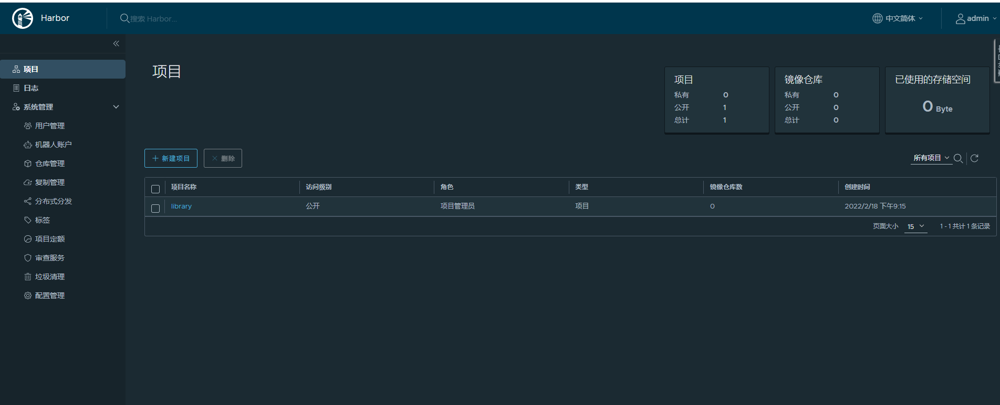
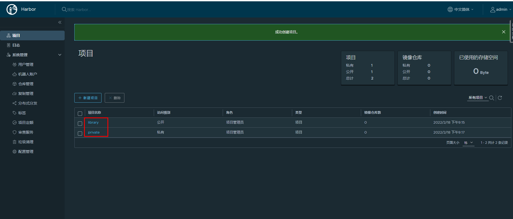
5.2 配置Containerd使用Harbor仓库¶
5.2.1 Harbor主机名解析¶
在所有安装containerd宿主机上添加此配置信息。
# vim /etc/hosts
# cat /etc/hosts
127.0.0.1 localhost localhost.localdomain localhost4 localhost4.localdomain4
::1 localhost localhost.localdomain localhost6 localhost6.localdomain6
192.168.10.165 harbor.kubemsb.com
说明
* 192.168.10.165是harbor的IP
* harbor.kubemsb.com建议用FQDN形式，如果用类似harbor这种短名，后面下载镜像会出问题
5.2.2 修改Containerd配置文件¶
此配置文件已提前替换过，仅修改本地容器镜像仓库地址即可。
# vim /etc/containerd/config.toml
# cat /etc/containerd/config.toml
root = "/var/lib/containerd"
state = "/run/containerd"
oom_score = -999
[grpc]
address = "/run/containerd/containerd.sock"
uid = 0
gid = 0
max_recv_message_size = 16777216
max_send_message_size = 16777216
[debug]
address = ""
uid = 0
gid = 0
level = ""
[metrics]
address = ""
grpc_histogram = false
[cgroup]
path = ""
[plugins]
[plugins.cgroups]
no_prometheus = false
[plugins.cri]
stream_server_address = "127.0.0.1"
stream_server_port = "0"
enable_selinux = false
sandbox_image = "easzlab/pause-amd64:3.2"
stats_collect_period = 10
systemd_cgroup = false
enable_tls_streaming = false
max_container_log_line_size = 16384
[plugins.cri.containerd]
snapshotter = "overlayfs"
no_pivot = false
[plugins.cri.containerd.default_runtime]
runtime_type = "io.containerd.runtime.v1.linux"
runtime_engine = ""
runtime_root = ""
[plugins.cri.containerd.untrusted_workload_runtime]
runtime_type = ""
runtime_engine = ""
runtime_root = ""
[plugins.cri.cni]
bin_dir = "/opt/kube/bin"
conf_dir = "/etc/cni/net.d"
conf_template = "/etc/cni/net.d/10-default.conf"
[plugins.cri.registry]
[plugins.cri.registry.mirrors]
[plugins.cri.registry.mirrors."docker.io"]
endpoint = [
"https://docker.mirrors.ustc.edu.cn",
"http://hub-mirror.c.163.com"
]
[plugins.cri.registry.mirrors."gcr.io"]
endpoint = [
"https://gcr.mirrors.ustc.edu.cn"
]
[plugins.cri.registry.mirrors."k8s.gcr.io"]
endpoint = [
"https://gcr.mirrors.ustc.edu.cn/google-containers/"
]
[plugins.cri.registry.mirrors."quay.io"]
endpoint = [
"https://quay.mirrors.ustc.edu.cn"
]
[plugins.cri.registry.mirrors."harbor.kubemsb.com"] 在此处添加,在镜像加速器下面添加这一段
endpoint = [
"http://harbor.kubemsb.com"
]
[plugins.cri.x509_key_pair_streaming]
tls_cert_file = ""
tls_key_file = ""
[plugins.diff-service]
default = ["walking"]
[plugins.linux]
shim = "containerd-shim"
runtime = "runc"
runtime_root = ""
no_shim = false
shim_debug = false
[plugins.opt]
path = "/opt/containerd"
[plugins.restart]
interval = "10s"
[plugins.scheduler]
pause_threshold = 0.02
deletion_threshold = 0
mutation_threshold = 100
schedule_delay = "0s"
startup_delay = "100ms"
重启containerd，以便于重新加载配置文件。
# systemctl restart containerd
5.2.3 ctr下载镜像¶
下载容器镜像
# ctr images pull --platform linux/amd64 docker.io/library/nginx:latest
说明:
* --platform linux/amd64 指定系统平台，也可以使用--all-platforms指定所有平台镜像。
输出：
docker.io/library/nginx:latest: resolved |++++++++++++++++++++++++++++++++++++++|
index-sha256:2834dc507516af02784808c5f48b7cbe38b8ed5d0f4837f16e78d00deb7e7767: done |++++++++++++++++++++++++++++++++++++++|
manifest-sha256:bb129a712c2431ecce4af8dde831e980373b26368233ef0f3b2bae9e9ec515ee: done |++++++++++++++++++++++++++++++++++++++|
layer-sha256:b559bad762bec166fd028483dd2a03f086d363ee827d8c98b7268112c508665a: done |++++++++++++++++++++++++++++++++++++++|
config-sha256:c316d5a335a5cf324b0dc83b3da82d7608724769f6454f6d9a621f3ec2534a5a: done |++++++++++++++++++++++++++++++++++++++|
layer-sha256:5eb5b503b37671af16371272f9c5313a3e82f1d0756e14506704489ad9900803: done |++++++++++++++++++++++++++++++++++++++|
layer-sha256:1ae07ab881bd848493ad54c2ba32017f94d1d8dbfd0ba41b618f17e80f834a0f: done |++++++++++++++++++++++++++++++++++++++|
layer-sha256:78091884b7bea0fa918527207924e9993bcc21bf7f1c9687da40042ceca31ac9: done |++++++++++++++++++++++++++++++++++++++|
layer-sha256:091c283c6a66ad0edd2ab84cb10edacc00a1a7bc5277f5365c0d5c5457a75aff: done |++++++++++++++++++++++++++++++++++++++|
layer-sha256:55de5851019b8f65ed6e28120c6300e35e556689d021e4b3411c7f4e90a9704b: done |++++++++++++++++++++++++++++++++++++++|
elapsed: 20.0s total: 53.2 M (2.7 MiB/s)
unpacking linux/amd64 sha256:2834dc507516af02784808c5f48b7cbe38b8ed5d0f4837f16e78d00deb7e7767...
done: 3.028652226s
查看已下载容器镜像
# ctr images ls
REF TYPE DIGEST SIZE PLATFORMS LABELS
docker.io/library/nginx:latest application/vnd.docker.distribution.manifest.list.v2+json sha256:2834dc507516af02784808c5f48b7cbe38b8ed5d0f4837f16e78d00deb7e7767 54.1 MiB linux/386,linux/amd64,linux/arm/v5,linux/arm/v7,linux/arm64/v8,linux/mips64le,linux/ppc64le,linux/s390x -
5.2.4 ctr上传镜像¶
上传到Harbor library公有项目
重新生成新的tag
# ctr images tag docker.io/library/nginx:latest harbor.kubemsb.com/library/nginx:latest
harbor.kubemsb.com/library/nginx:latest
查看已生成容器镜像
# ctr images ls
REF TYPE DIGEST SIZE PLATFORMS LABELS
docker.io/library/nginx:latest application/vnd.docker.distribution.manifest.list.v2+json sha256:2834dc507516af02784808c5f48b7cbe38b8ed5d0f4837f16e78d00deb7e7767 54.1 MiB linux/386,linux/amd64,linux/arm/v5,linux/arm/v7,linux/arm64/v8,linux/mips64le,linux/ppc64le,linux/s390x -
harbor.kubemsb.com/library/nginx:latest application/vnd.docker.distribution.manifest.list.v2+json sha256:2834dc507516af02784808c5f48b7cbe38b8ed5d0f4837f16e78d00deb7e7767 54.1 MiB linux/386,linux/amd64,linux/arm/v5,linux/arm/v7,linux/arm64/v8,linux/mips64le,linux/ppc64le,linux/s390x -
推送容器镜像至Harbor
# ctr images push --platform linux/amd64 --plain-http -u admin:Harbor12345 harbor.kubemsb.com/library/nginx:latest
说明:
* 先tag再push
* 因为我们harbor是http协议，不是https协议，所以需要加上`--plain-http`
* `--user admin:Harbor12345`指定harbor的用户名与密码
输出：
manifest-sha256:0fd68ec4b64b8dbb2bef1f1a5de9d47b658afd3635dc9c45bf0cbeac46e72101: done |++++++++++++++++++++++++++++++++++++++|
config-sha256:dd025cdfe837e1c6395365870a491cf16bae668218edb07d85c626928a60e478: done |++++++++++++++++++++++++++++++++++++++|
elapsed: 0.5 s total: 9.3 Ki (18.1 KiB/s)
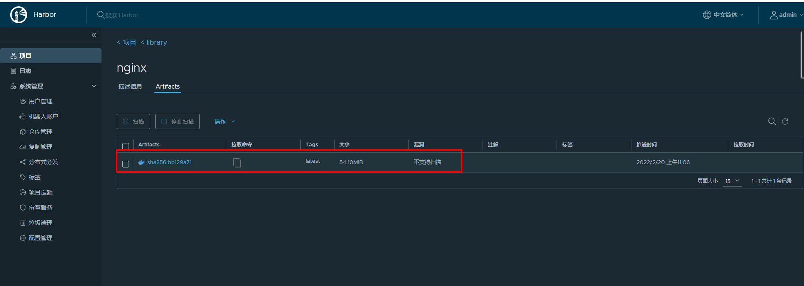
下载已上传容器镜像
# ctr images pull --plain-http harbor.kubemsb.com/library/nginx:latest
六、Containerd NameSpace管理¶
containerd中namespace的作用为:隔离运行的容器，可以实现运行多个容器。
查看命令帮助
# ctr namespace --help
NAME:
ctr namespaces - manage namespaces
USAGE:
ctr namespaces command [command options] [arguments...]
COMMANDS:
create, c create a new namespace
list, ls list namespaces
remove, rm remove one or more namespaces
label set and clear labels for a namespace
OPTIONS:
--help, -h show help
列出已有namespace
# ctr namespace ls
NAME LABELS
default
k8s.io
创建namespace
# ctr namespace create kubemsb
[root@localhost ~]# ctr namespace ls
NAME LABELS
default
k8s.io
kubemsb 此命名空间为新添加的
删除namespace
# ctr namespace rm kubemsb
kubemsb
再次查看是否删除
[root@localhost ~]# ctr namespace ls
NAME LABELS
default
k8s.io
查看指定namespace中是否有用户进程在运行
# ctr -n kubemsb tasks ls
TASK PID STATUS
在指定namespace中下载容器镜像
# ctr -n kubemsb images pull docker.io/library/nginx:latest
在指定namespace中创建静态容器
# ctr -n kubemsb container create docker.io/library/nginx:latest nginxapp
查看在指定namespace中创建的容器
# ctr -n kubemsb container ls
CONTAINER IMAGE RUNTIME
nginxapp docker.io/library/nginx:latest io.containerd.runc.v2
七、Containerd Network管理¶
默认Containerd管理的容器仅有lo网络，无法访问容器之外的网络，可以为其添加网络插件，使用容器可以连接外网。CNI（Container Network Interface）
7.1 创建CNI网络¶
| containernetworking/cni | CNI v1.0.1 |
|---|---|
| containernetworking/plugins | CNI Plugins v1.0.1 |
7.1.1 获取CNI工具源码¶
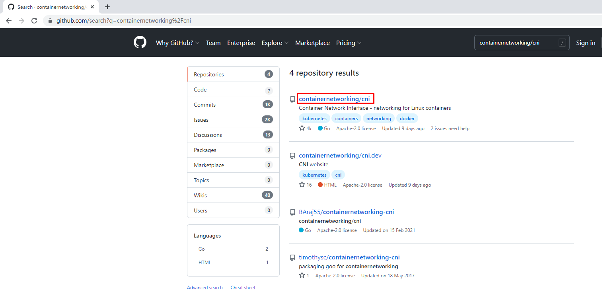
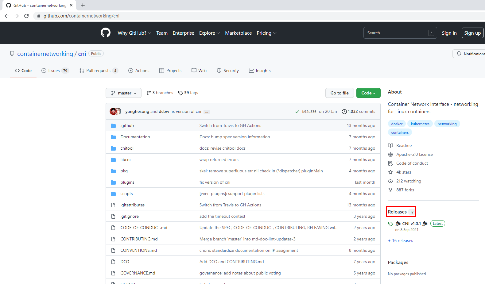
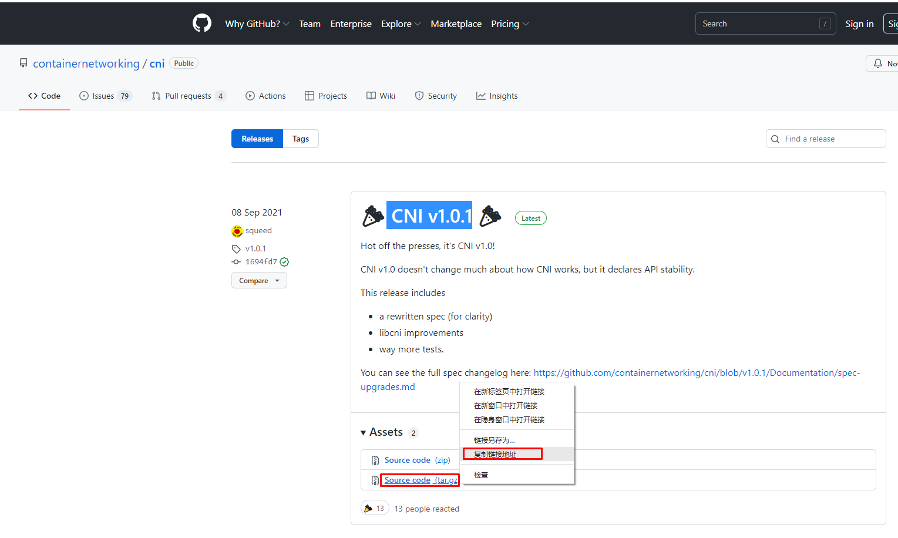
使用wget下载cni工具源码包
# wget https://github.com/containernetworking/cni/archive/refs/tags/v1.0.1.tar.gz
查看已下载cni工具源码包
# ls
v1.0.1.tar.gz
解压已下载cni工具源码包
# tar xf v1.0.1.tar.gz
查看解压后已下载cni工具源码包
# ls
cni-1.0.1
重命名已下载cni工具源码包目录
# mv cni-1.0.1 cni
查看重新命名后目录
# ls
cni
查看cni工具目录中包含的文件
# ls cni
cnitool CONTRIBUTING.md DCO go.mod GOVERNANCE.md LICENSE MAINTAINERS plugins RELEASING.md scripts test.sh
CODE-OF-CONDUCT.md CONVENTIONS.md Documentation go.sum libcni logo.png pkg README.md ROADMAP.md SPEC.md
7.1.2 获取CNI Plugins（CNI插件）¶
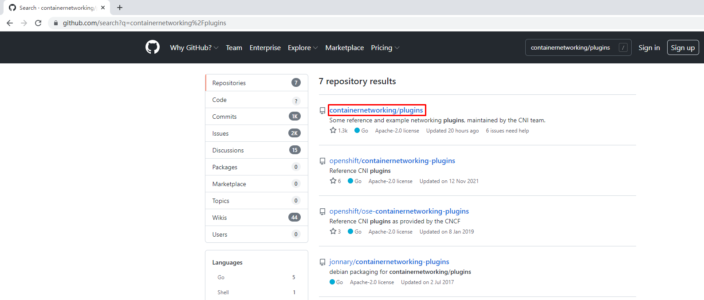
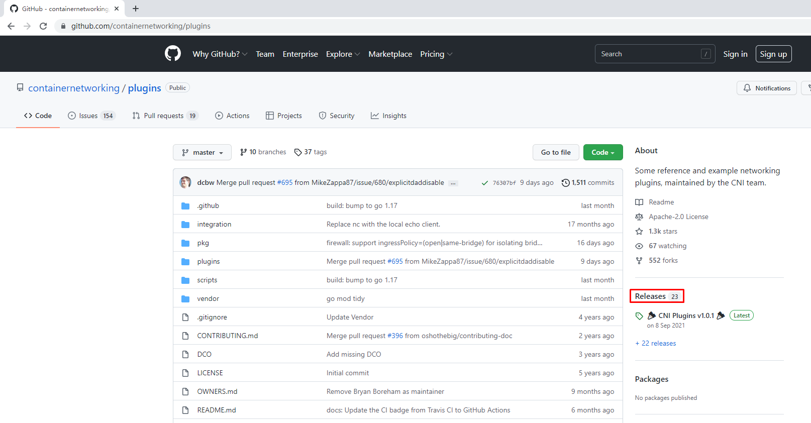
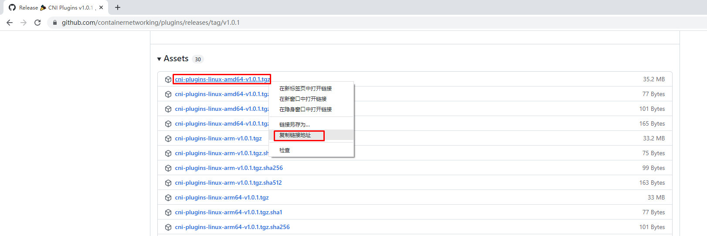
使用wget下载cni插件工具源码包
# wget https://github.com/containernetworking/plugins/releases/download/v1.0.1/cni-plugins-linux-amd64-v1.0.1.tgz
查看已下载cni插件工具源码包
# ls
cni-plugins-linux-amd64-v1.0.1.tgz
cni
创建cni插件工具解压目录
# mkdir /home/cni-plugins
解压cni插件工具至上述创建的目录中
# tar xf cni-plugins-linux-amd64-v1.0.1.tgz -C /home/cni-plugins
查看解压后目录
# ls cni-plugins
bandwidth bridge dhcp firewall host-device host-local ipvlan loopback macvlan portmap ptp sbr static tuning vlan vrf
7.1.3 准备CNI网络配置文件¶
准备容器网络配置文件，用于为容器提供网关、IP地址等。
创建名为mynet的网络，其中包含名为cni0的网桥
# vim /etc/cni/net.d/10-mynet.conf
# cat /etc/cni/net.d/10-mynet.conf
{
"cniVersion": "1.0.0",
"name": "mynet",
"type": "bridge",
"bridge": "cni0",
"isGateway": true,
"ipMasq": true,
"ipam": {
"type": "host-local",
"subnet": "10.66.0.0/16",
"routes": [
{ "dst": "0.0.0.0/0" }
]
}
}
# vim /etc/cni/net.d/99-loopback.conf
# cat /etc/cni/net.d/99-loopback.conf
{
"cniVerion": "1.0.0",
"name": "lo",
"type": "loopback"
}
7.1.4 生成CNI网络¶
获取epel源
# wget -O /etc/yum.repos.d/epel.repo http://mirrors.aliyun.com/repo/epel-7.repo
安装jq
# yum -y install jq
进入cni工具目录
# cd cni
[root@localhost cni]# ls
cnitool CONTRIBUTING.md DCO go.mod GOVERNANCE.md LICENSE MAINTAINERS plugins RELEASING.md scripts test.sh
CODE-OF-CONDUCT.md CONVENTIONS.md Documentation go.sum libcni logo.png pkg README.md ROADMAP.md SPEC.md
必须在scripts目录中执行，需要依赖exec-plugins.sh文件，再次进入scripts目录
[root@localhost cni]# cd scripts/
查看执行脚本文件
[root@localhost scripts]# ls
docker-run.sh exec-plugins.sh priv-net-run.sh release.sh
执行脚本文件，基于/etc/cni/net.d/目录中的*.conf配置文件生成容器网络
[root@localhost scripts]# CNI_PATH=/home/cni-plugins ./priv-net-run.sh echo "Hello World"
Hello World
在宿主机上查看是否生成容器网络名为cni0的网桥
# ip a s
......
5: cni0: <NO-CARRIER,BROADCAST,MULTICAST,UP> mtu 1500 qdisc noqueue state DOWN group default qlen 1000
link/ether 36:af:7a:4a:d6:12 brd ff:ff:ff:ff:ff:ff
inet 10.66.0.1/16 brd 10.66.255.255 scope global cni0
valid_lft forever preferred_lft forever
inet6 fe80::34af:7aff:fe4a:d612/64 scope link
valid_lft forever preferred_lft forever
在宿主机上查看其路由表情况
# ip route
default via 192.168.10.2 dev ens33 proto dhcp metric 100
10.66.0.0/16 dev cni0 proto kernel scope link src 10.66.0.1
192.168.10.0/24 dev ens33 proto kernel scope link src 192.168.10.164 metric 100
192.168.122.0/24 dev virbr0 proto kernel scope link src 192.168.122.1
7.2 为Containerd容器配置网络功能¶
7.2.1 创建一个容器¶
# ctr images ls
REF TYPE DIGEST SIZE PLATFORMS LABELS
# ctr images pull docker.io/library/busybox:latest
# ctr run -d docker.io/library/busybox:latest busybox
# ctr container ls
CONTAINER IMAGE RUNTIME
busybox docker.io/library/busybox:latest io.containerd.runc.v2
# ctr tasks ls
TASK PID STATUS
busybox 8377 RUNNING
7.2.2 进入容器查看其网络情况¶
# ctr tasks exec --exec-id $RANDOM -t busybox sh
/ # ip a s
1: lo: <LOOPBACK,UP,LOWER_UP> mtu 65536 qdisc noqueue qlen 1000
link/loopback 00:00:00:00:00:00 brd 00:00:00:00:00:00
inet 127.0.0.1/8 scope host lo
valid_lft forever preferred_lft forever
inet6 ::1/128 scope host
valid_lft forever preferred_lft forever
7.2.3 获取容器进程ID及其网络命名空间¶
在宿主机中完成指定容器进程ID获取
# pid=$(ctr tasks ls | grep busybox | awk '{print $2}')
# echo $pid
8377
在宿主机中完成指定容器网络命名空间路径获取
# netnspath=/proc/$pid/ns/net
# echo $netnspath
/proc/8377/ns/net
7.2.4 为指定容器添加网络配置¶
确认执行脚本文件时所在的目录
[root@localhost scripts]# pwd
/home/cni/scripts
执行脚本文件为容器添加网络配置
[root@localhost scripts]# CNI_PATH=/home/cni-plugins ./exec-plugins.sh add $pid $netnspath
进入容器确认是否添加网卡信息
# ctr tasks exec --exec-id $RANDOM -t busybox sh
/ # ip a s
1: lo: <LOOPBACK,UP,LOWER_UP> mtu 65536 qdisc noqueue qlen 1000
link/loopback 00:00:00:00:00:00 brd 00:00:00:00:00:00
inet 127.0.0.1/8 scope host lo
valid_lft forever preferred_lft forever
inet6 ::1/128 scope host
valid_lft forever preferred_lft forever
2: eth0@if7: <BROADCAST,MULTICAST,UP,LOWER_UP,M-DOWN> mtu 1500 qdisc noqueue
link/ether a2:35:b7:e0:60:0a brd ff:ff:ff:ff:ff:ff
inet 10.66.0.3/16 brd 10.66.255.255 scope global eth0
valid_lft forever preferred_lft forever
inet6 fe80::a035:b7ff:fee0:600a/64 scope link
valid_lft forever preferred_lft forever
在容器中ping容器宿主机IP地址
/ # ping -c 2 192.168.10.164
PING 192.168.10.164 (192.168.10.164): 56 data bytes
64 bytes from 192.168.10.164: seq=0 ttl=64 time=0.132 ms
64 bytes from 192.168.10.164: seq=1 ttl=64 time=0.044 ms
--- 192.168.10.164 ping statistics ---
2 packets transmitted, 2 packets received, 0% packet loss
round-trip min/avg/max = 0.044/0.088/0.132 ms
在容器中ping宿主机所在网络的网关IP地址
/ # ping -c 2 192.168.10.2
PING 192.168.10.2 (192.168.10.2): 56 data bytes
64 bytes from 192.168.10.2: seq=0 ttl=127 time=0.338 ms
64 bytes from 192.168.10.2: seq=1 ttl=127 time=0.280 ms
--- 192.168.10.2 ping statistics ---
2 packets transmitted, 2 packets received, 0% packet loss
round-trip min/avg/max = 0.280/0.309/0.338 ms
在容器中ping宿主机所在网络中的其它主机IP地址
/ # ping -c 2 192.168.10.165
PING 192.168.10.165 (192.168.10.165): 56 data bytes
64 bytes from 192.168.10.165: seq=0 ttl=63 time=0.422 ms
64 bytes from 192.168.10.165: seq=1 ttl=63 time=0.908 ms
--- 192.168.10.165 ping statistics ---
2 packets transmitted, 2 packets received, 0% packet loss
round-trip min/avg/max = 0.422/0.665/0.908 ms
在容器中开启httpd服务
/ # echo "containerd net web test" > /tmp/index.html
/ # httpd -h /tmp
/ # wget -O - -q 127.0.0.1
containerd net web test
/ # exit
在宿主机访问容器提供的httpd服务
[root@localhost scripts]# curl http://10.66.0.3
containerd net web test
八、Containerd容器数据持久化存储¶
实现把宿主机目录挂载至Containerd容器中，实现容器数据持久化存储
# ctr container create docker.io/library/busybox:latest busybox3 --mount type=bind,src=/tmp,dst=/hostdir,options=rbind:rw
说明：
创建一个静态容器，实现宿主机目录与容器挂载
src=/tmp 为宿主机目录
dst=/hostdir 为容器中目录
运行用户进程
# ctr tasks start -d busybox3 bash
进入容器，查看是否挂载成功
# ctr tasks exec --exec-id $RANDOM -t busybox3 sh
/ # ls /hostdir
VMwareDnD
systemd-private-cf1fe70805214c80867e7eb62dff5be7-bolt.service-MWV1Ju
systemd-private-cf1fe70805214c80867e7eb62dff5be7-chronyd.service-6B6j8p
systemd-private-cf1fe70805214c80867e7eb62dff5be7-colord.service-6fI31A
systemd-private-cf1fe70805214c80867e7eb62dff5be7-cups.service-tuK4zI
systemd-private-cf1fe70805214c80867e7eb62dff5be7-rtkit-daemon.service-vhP67o
tracker-extract-files.0
vmware-root_703-3988031936
vmware-root_704-2990744159
vmware-root_713-4290166671
向容器中挂载目录中添加文件
/ # echo "hello world" > /hostdir/test.txt
退出容器
/ # exit
在宿主机上查看被容器挂载的目录中是否添加了新的文件，已添加表明被容器挂载成功，并可以读写此目录中内容。
[root@localhost ~]# cat /tmp/test.txt
hello world
九、与其它Containerd容器共享命名空间¶
当需要与其它Containerd管理的容器共享命名空间时，可使用如下方法。
# ctr tasks ls
TASK PID STATUS
busybox3 13778 RUNNING
busybox 8377 RUNNING
busybox1 12469 RUNNING
# ctr container create --with-ns "pid:/proc/13778/ns/pid" docker.io/library/busybox:latest busybox4
[root@localhost ~]# ctr tasks start -d busybox4 bash
[root@localhost ~]# ctr tasks exec --exec-id $RANDOM -t busybox3 sh
/ # ps aux
PID USER TIME COMMAND
1 root 0:00 sh
20 root 0:00 sh
26 root 0:00 sh
32 root 0:00 ps aux
十、Docker集成Containerd实现容器管理¶
目前Containerd主要任务还在于解决容器运行时的问题，对于其周边生态还不完善，所以可以借助Docker结合Containerd来实现Docker完整的功能应用。
准备Docker安装YUM源
# wget -O /etc/yum.repos.d/docker-ce.repo https://mirrors.aliyun.com/docker-ce/linux/centos/docker-ce.repo
安装Docker-ce
# yum -y install docker-ce
修改Docker服务文件，以便使用已安装的containerd。
# vim /etc/systemd/system/multi-user.target.wants/docker.service
修改前：
[Service]
Type=notify
# the default is not to use systemd for cgroups because the delegate issues still
# exists and systemd currently does not support the cgroup feature set required
# for containers run by docker
ExecStart=/usr/bin/dockerd -H fd:// --containerd=/run/containerd/containerd.sock 此处
ExecReload=/bin/kill -s HUP $MAINPID
修改后：
[Service]
Type=notify
# the default is not to use systemd for cgroups because the delegate issues still
# exists and systemd currently does not support the cgroup feature set required
# for containers run by docker
ExecStart=/usr/bin/dockerd --containerd /run/containerd/containerd.sock --debug 此处
ExecReload=/bin/kill -s HUP $MAINPID
TimeoutSec=0
RestartSec=2
Restart=always
设置docker daemon启动并设置其开机自启动
# systemctl daemon-reload
# systemctl enable docker
Created symlink from /etc/systemd/system/multi-user.target.wants/docker.service to /usr/lib/systemd/system/docker.service.
# systemctl start docker
查看其启动后进程
# ps aux | grep docker
root 16270 0.0 3.1 1155116 63320 ? Ssl 12:09 0:00 /usr/bin/dockerd --containerd /run/containerd/containerd.sock --debug
使用docker运行容器
# docker run -d nginx:latest
......
219a9c6727bcd162d0a4868746c513a277276a110f47e15368b4229988003c13
使用docker ps命令查看正在运行的容器
# docker ps
CONTAINER ID IMAGE COMMAND CREATED STATUS PORTS NAMES
219a9c6727bc nginx:latest "/docker-entrypoint.…" 14 seconds ago Up 13 seconds 80/tcp happy_tu
使用ctr查看是否添加一个新的namespace，本案例中发现添加一个moby命名空间，即为docker使用的命名空间。
# ctr namespace ls
NAME LABELS
default
k8s.io
kubemsb
moby
查看moby命名空间，发现使用docker run运行的容器包含在其中。
# ctr -n moby container ls
CONTAINER IMAGE RUNTIME
219a9c6727bcd162d0a4868746c513a277276a110f47e15368b4229988003c13 - io.containerd.runc.v2
使用ctr能够查看到一个正在运行的容器，既表示docker run运行的容器是被containerd管理的。
# ctr -n moby tasks ls
TASK PID STATUS
219a9c6727bcd162d0a4868746c513a277276a110f47e15368b4229988003c13 16719 RUNNING
使用docker stop停止且使用docker rm删除容器后再观察，发现容器被删除。
# docker stop 219;docker rm 219
219
219
# ctr -n moby container ls
CONTAINER IMAGE RUNTIME
# ctr -n moby tasks ls
TASK PID STATUS